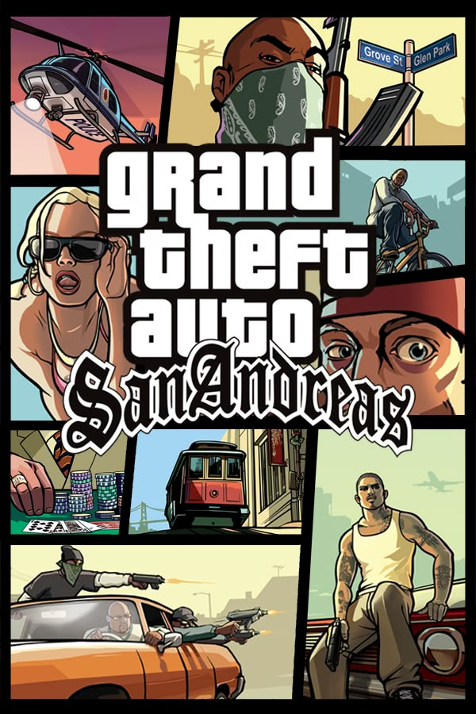
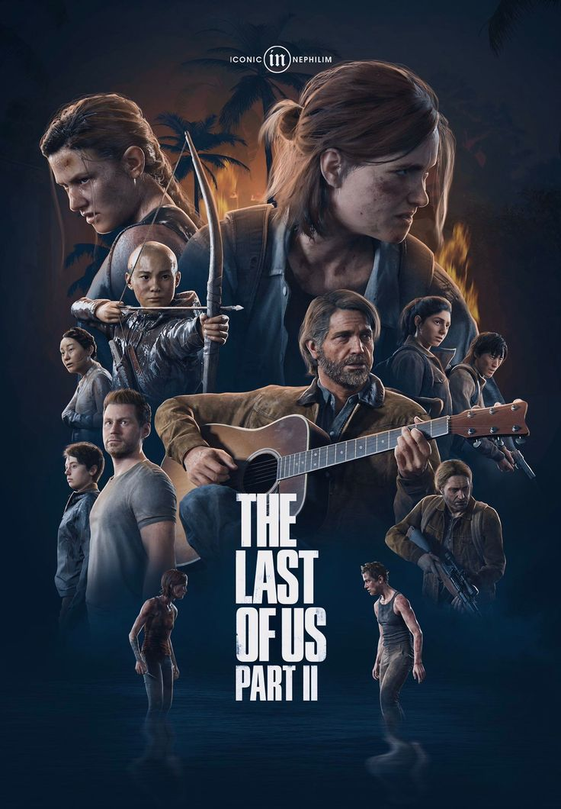

Acción
Los videojuegos de acción se caracterizan por el uso de reflejos rápidos, coordinación y habilidades motoras para superar obstáculos o enemigos. Suelen incluir combates, exploración y desafíos físicos en tiempo real. Ejemplo: Devil May Cry, God of War, Metal Gear Solid
Aventura
Este género se centra en la exploración, la resolución de acertijos y la narrativa. Los jugadores asumen el rol de un personaje que debe avanzar en la historia interactuando con el entorno. Ejemplo: The Legend of Zelda, Tomb Raider, Uncharted
Deportes
Simulan actividades deportivas reales como fútbol, baloncesto, tenis, automovilismo, entre otros. Pueden ser realistas o arcade, dependiendo del enfoque del juego. Ejemplo: FIFA, NBA 2K, Gran Turismo
Estrategia

Requieren planificación y toma de decisiones para gestionar recursos, unidades o civilizaciones. Pueden ser en tiempo real (RTS) o por turnos (TBS). Ejemplo: Age of Empires, StarCraft, XCOM
Juegos de rol (RPG)

Permiten a los jugadores asumir el rol de un personaje y mejorar sus habilidades, equipo y características a lo largo del juego. Pueden ser occidentales (WRPG) o japoneses (JRPG). Ejemplo: The Witcher, Final Fantasy, Skyrim